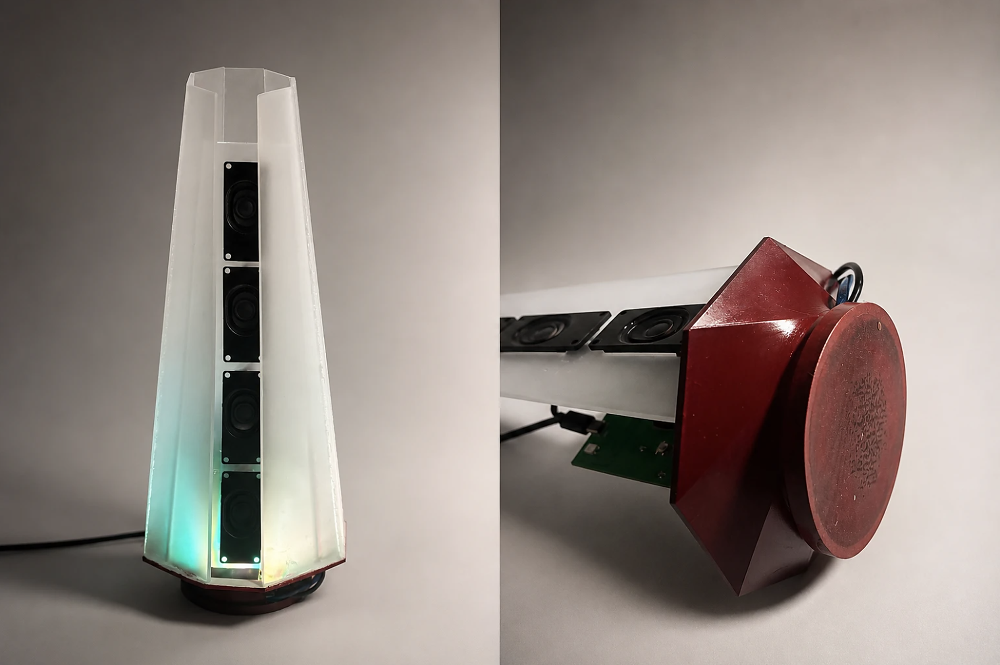

Overview: Light and sound as one object
Tōrō is an interactive audio sculpture that reinterprets the traditional Japanese lantern through contemporary fabrication and embedded technology. A multi-driver Bluetooth speaker system is housed within a faceted translucent structure, allowing light and sound to coexist as a unified sensory experience.
The segmented acrylic form creates a rhythmic interplay of geometry and illumination, diffusing light while subtly revealing the internal architecture. An illuminated base enhances the object's spatial presence.
Balancing acoustic function with sculptural intent, Tōrō explores the relationship between material, light, and sound in a compact desktop form.
What I did
3D Fabrication
Designed and fabricated the faceted acrylic structure and illuminated base.
Electronics & Audio
Integrated the Bluetooth speaker system, wiring, and lighting components.
Product Design
Balanced form, function, material, and user experience to create an immersive desktop sculpture.
From sketch to finished object
Sketch & concept
I started from the Japanese lantern, a form that holds light and gives it shape. I sketched tall, tapered shapes on paper and explored how a speaker could sit inside one without losing the lantern feel.
3D modeling
I turned the best sketch into a 3D model: a faceted, tapered shell with a base underneath. I used wireframe and exploded views to check how the shell, speaker spine, and base fit together before building anything.
Acrylic shell
I cut the angled acrylic panels, measured each one, and glued them into the faceted shell. A frosted finish diffuses the light so the shell glows evenly.
Speakers & electronics
I mounted four drivers on a clear acrylic spine inside the shell. I designed my own PCB to run the audio and the LEDs, then tested speaker placement and LED brightness until the sound and light felt balanced.
Base & assembly
The red base holds the power connection, wiring, and electronics out of sight. I fit everything inside, checked each component's power needs, and tested the finished speaker.
Problems and how I solved them
Designing and making my own PCB was challenging.
Fix: Tested connections, fixed errors, and redesigned parts of the circuit.
Cutting and assembling acrylic panels accurately.
Fix: Measured carefully and adjusted the designs before fabrication.
Getting good sound quality from multiple speakers.
Fix: Tested speaker placement and adjusted the audio setup.
Creating even LED lighting.
Fix: Adjusted LED placement and brightness.
Fitting all electronics inside the limited space.
Fix: Organized components and wiring to use space more efficiently.
Managing power and wiring.
Fix: Tested connections and checked power requirements for each component.
Prototype & presentation


